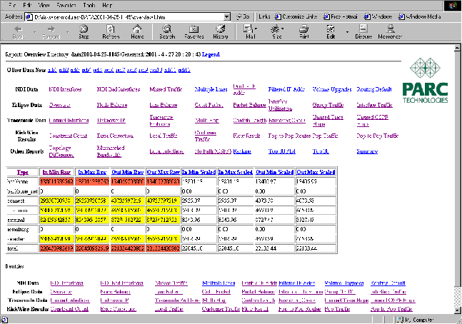

Next: Correctness and Performance
Up: If it doesn't Work
Previous: Checking program points
Contents
Index
Subsections
Ideally, we can figure out all problems without running the application in the debugger. But at some point we may need to understand what the system is doing in more detail. We can then start the ECLiPSe tracer tool from the Tools menu. Figure 7.1 shows a typical output. In the top window we see the current stack of predicate calls, in the bottom we see a history of the program execution.
Figure 7.1:
ECLiPSe Tracer
|  |
The three buttons Creep, Skip, Leap show the main commands of the tracer. The creep operation single-steps to the next statement in the program. The skip operation executes the current query and stops again when that query either succeeds or fails. The leap operation continues execution until it reaches a spy point, a predicate call for which we have indicated some interest before.
A normal debugging session consists of a sequence of leap, skip and creep operations to reach an interesting part of the program and then a more detailed step-by step analysis of what is happening. It is pointless and very time consuming to single-step through a part of the program that we have already checked, but we have to be careful not to skip over the interesting part of the program.
In a large program, it may be difficult to leap directly to the interesting part of the program. But we may have to repeat this operation several times, if we repeatedly leap/skip over an interesting statement. We can use the invocation number of a statement to jump to this exact place in the execution again. The invocation number is printed in parentheses at the beginning of each trace line. By re-starting the debugger, copying this number into the text field to the right of the button To Invoc: and then pressing this button we can directly jump to this location.
Unfortunately, jumping to an invocation number can be quite slow in a large program. The debugger has to scan each statement to check its invocation number. It can be faster (but more tedious) to use skip and leap commands to reach a program point7.1.
Next: Correctness and Performance
Up: If it doesn't Work
Previous: Checking program points
Contents
Index
Warwick Harvey
2005-01-25